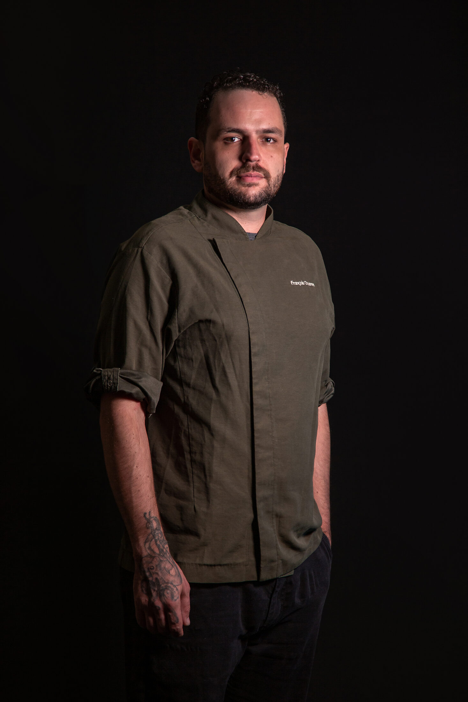
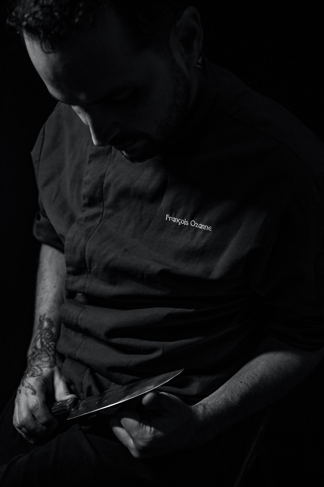

Chef · Consultor Gastronômico
Técnica francesa aplicada ao terroir sergipano, e uma metodologia própria pra decidir com clareza. Cardápio, marca e estratégia — sem enrolação, com critério.

Quem cozinha
Pai francês, mãe gaúcha, criado em Sergipe — a fusão como laboratório de identidade, na cozinha e fora dela.

— onde eu mais penso: faca na mão, cabeça baixa, tudo em silêncio.
Comecei como auxiliar de cozinha em Porto Alegre e cheguei a chef-proprietário do Alma Bistrot, em Aracaju. Pelo caminho, graduação em Gastronomia pela UNIT (Aracaju/SE, 2012), especialização em Gestão de Restaurantes pelo Le Cordon Bleu (Lima, 2018), o título de Embaixador da Cozinha Sergipana, o Prêmio Dolma em 2018, e seis anos lecionando no Instituto Gastronômico das Américas.
Hoje atuo como curador e consultor independente para projetos gastronômicos que precisam de algo além de "mais um cardápio bonito": precisam de critério técnico, de uma narrativa que se sustente, e de alguém que sabe dizer "isso vai dar ruim" antes que aconteça.
Nos últimos meses, além da cozinha, venho aplicando essa mesma disciplina técnica a marca, conteúdo e estratégia — inclusive reformulando do zero a comunicação de produtos gastronômicos, com foco total em conversão real, não em métrica de vaidade.
Formação acadêmica completa em Formação ↓
O que eu faço
Quatro frentes que costumo combinar — a maioria dos projetos precisa de mais de uma ao mesmo tempo.
Critério técnico de ponta a ponta: do conceito de cardápio ao número que garante que ele se sustenta na operação.
Posicionamento e comunicação que convertem — não vídeo bonito que ninguém termina de assistir.
Um jeito estruturado de cruzar mercado, autenticidade, viabilidade, técnica, processo e cultura antes de decidir. Ver como funciona ↓
Transmissão de técnica e critério — não só receita.
Como eu decido
Todo projeto gastronômico que já vi fracassar, fracassou por ignorar uma destas seis lentes — nunca por falta de uma boa ideia.
Antes de recomendar qualquer coisa, analiso o projeto por seis ângulos diferentes — cada um pega um tipo de risco que os outros não veem sozinho. Não é achismo disfarçado de opinião de chef: é um processo que uso nos meus próprios projetos, com a mesma disciplina que aplico aos dos meus clientes.
Posicionamento, funil, o que de fato converte cliente — não o que parece bonito.
O que é genuíno versus o que é tendência passageira disfarçada de conceito.
Prazo, recurso, responsável, critério de decisão com data — não esperança de que dê certo.
Ficha técnica, CMV, engenharia de cardápio — a conta por trás do prato.
O que faz a cozinha funcionar todo dia, com segurança, sem depender de heroísmo.
Equipe e parceiros que entendem o porquê — porque isso é o que sustenta o como.
Uso isso pra responder perguntas difíceis com clareza — inclusive "vale a pena continuar investindo nisso, ou é hora de parar?" — com critério, não só com instinto.
Formação
Formação acadêmica e a experiência de seis anos do outro lado da bancada, ensinando.
Graduação em Gastronomia. Aracaju, Sergipe · 2012.
Especialização em Gestão de Restaurantes · 2018.
Docente por 6 anos. Ensinei técnica com o mesmo critério que aplico em consultoria: técnica serve o prato, o prato serve quem come — nessa ordem.
Conta um pouco do que você precisa — cardápio, marca, viabilidade, ou tudo junto — e eu respondo diretamente.
Identidade escura + verde/terracota, com fotos reais do banco `Marca_Fran_Instagram/fotos_para_escolha`. O formulário de contato abre seu e-mail com a mensagem pronta (não depende de servidor).